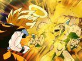

The Enemy Is Always Trying to Feed on the Light
Trey Walters · Jul 14, 2026

One day the Lord showed me why, almost every time I entered into deep prayer, I would suddenly come under attack. It wasn’t random. The enemy wasn’t after me as much as he was after the light.
The Lord brought to mind the battle between Yakon and Goku. Yakon didn’t try to overpower Goku physically. Instead, he tried to feed on Goku’s light, draining his energy and attempting to reduce him from a Super Saiyan back to his base form.
In the same way, the enemy seeks to feed on the light God has placed within His people. He looks for opportunities to drain your spiritual strength, distract your focus, and keep you from walking in the fullness of what God has given you.
But there is a counterattack.
Don’t let the darkness feed on your light. Let your light consume the darkness instead. Continue to pray. Continue to worship. Continue to walk in obedience. The very light the enemy tries to steal is the same light that exposes him, drives him back, and destroys his works.
Protect the light God has entrusted to you, and don’t stop shining simply because darkness is present. Light was never meant to run from darkness. It was created to overcome it.